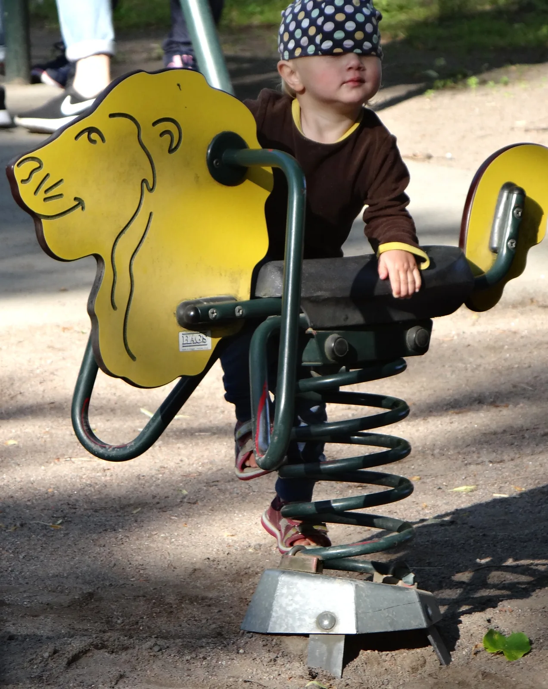

Jousivoima ja jousen energia
Miksi flipperin laukaisin ampuu kuulan sitä kovempaa, mitä pidemmälle sen jousta puristetaan?
Pohjatiedot
- Jaksollisessa liikkeessä kappale liikkuu edestakaisin tasapainoaseman molemmin puolinluku Värähtelyn suureet: jaksonaika, taajuus ja amplitudi
- Kaksi kappaletta vaikuttaa toisiinsa yhtä suurilla ja vastakkaissuuntaisilla voimillaluku Vuorovaikutus ja voima: Newtonin ensimmäinen ja kolmas laki
- Jännitetyllä jousella on jousen potentiaalienergiaaluku Liike-energia, potentiaalienergia ja mekaaninen energia
- Suoran sovittaminen mittauspisteisiin ja kulmakertoimen lukeminenluku Graafinen esitys ja suoran sovittaminen
Ydinpolku: etene vaiheiden mukaan. Ydinpolkuun kuuluvat laskujen lisäksi tutkimukset, selitykset ja kuvaajat. Valinnainen-merkityt tehtävät tarjoavat lisäharjoittelua. Valinnaisia tehtäviä 3.
Pohdinta
Flipperipelissä kuula ammutaan pelikentälle laukaisimella. Pelaaja vetää männän nuppia taaksepäin, jolloin männän jousi puristuu, ja päästää irti. Lyhyt veto lähettää kuulan hiljalleen, pitkä veto niin kovaa, että kuula kiertää koko kentän. Kun nuppia pitää paikallaan, jousi tuntuu kädessä.
Mihin suuntaan jousi työntää mäntää, ja kuinka paljon enemmän energiaa jouseen varastoituu, kun puristusmatka kaksinkertaistuu?
Valinnainen Kertaa: Newtonin kolmas laki
Ennusta
Tee ennusteet ennen tutkimista 3 kysymystä
Ennuste 1: puristettu jousi
Ennuste 2: kaksinkertainen poikkeama
Ennuste 3: jousen energia
Tutki
Simulaatio
Käyttöohje
Valitse kärryn paikka $x$ liukusäätimellä ja Jousi valikosta. Tasapainoasemassa $x = 0$ jousi on lepopituudessaan; $x > 0$ venyttää ja $x < 0$ puristaa jousta. Kuvaajaan jää piste jokaisesta paikasta, jonka valitset, ja nykyinen piste on punainen. Tyhjennä kuvaaja poistaa valitun jousen pisteet. Lukemat päivittyvät heti.
Mallin oletukset
Arvot ovat simulaation laskemia mallin arvoja. Rata on kitkaton, ja kärry on levossa, koska käsi pitää sitä paikallaan. Kuvaan on piirretty vain kärryyn vaikuttavat vaakasuorat voimat; paino ja radan tukivoima kumoavat toisensa. Jousien jousivakiot ovat mallin arvoja, joita ei näytetä. Mallissa jousi noudattaa lakiaan koko säätöalueella, eikä sitä voi venyttää pysyvästi.
Laskennan selitys
Vaakasuorassa jousessa origo on tasapainoasemassa, jossa jousi on lepopituudessaan, ja $x$-akseli osoittaa oikealle. Jousen voima kärryyn on $F = -kx$. Kärry on levossa, joten käden voima kärryyn on $F_\text{k} = -F = kx$. Kärry vetää tai työntää jousta yhtä suurella voimalla, joten jousta venyttävä voima on $F_\text{v} = kx$; puristettaessa se on negatiivinen. Kuvaajan pystyakselilla on $F_\text{v}$. Jousen potentiaalienergia on $E_\text{p} = \tfrac{1}{2}kx^2$, kuvaajan kolmion pinta-ala. Voimanuolten pituus on $6$ kuvapistettä newtonia kohti.
Kärry on kiinni jousessa kitkattomalla radalla, ja käsi pitää sitä paikallaan. Siirrä kärryä, vaihda jousta ja seuraa voimia, lukemia ja kuvaajaa.
Koe 1: voiman suunta ja suuruus
Testaa ennusteet 1 ja 2. Alkutila valitsee jousen B. Muuta vain kärryn paikkaa $x$ ja kirjaa mittaus ensin puristetulla jousella kohdissa $-0{,}10$ ja $-0{,}05\,\text{m}$, sitten venytetyllä kohdissa $0{,}05$, $0{,}10$ ja $0{,}20\,\text{m}$. Katso kunkin kohdalla, mihin suuntaan nuolet osoittavat.
Alkutila: jousi: B, paikka $x$ = $0\,\text{m}$. Vakiona: jousi. Muutetaan: paikka $x$.
| paikka $x$ | jousen voima $F$ $(\text{N})$ | käden voima $F_\text{k}$ $(\text{N})$ |
|---|
Lisää tutkittavaa 3 tehtävää
Koe 2: jousen energia
Testaa ennuste 3. Alkutila valitsee jousen B. Kirjaa mittaus kohdissa $0{,}05$, $0{,}10$ ja $0{,}20\,\text{m}$ ja katso joka kerta kuvaajan väritettyä kolmiota. Kirjaa lopuksi vielä kohta $-0{,}10\,\text{m}$ ja vertaa energiaa kohtaan $0{,}10\,\text{m}$.
Alkutila: jousi: B, paikka $x$ = $0\,\text{m}$. Vakiona: jousi. Muutetaan: paikka $x$.
| paikka $x$ | venyttävä voima $F_\text{v}$ $(\text{N})$ | $E_\text{p}$ $(\text{J})$ |
|---|
Valinnainen Koe 3: jäykkä ja pehmeä jousi
Alkutila asettaa kärryn kohtaan $x = 0{,}10\,\text{m}$. Muuta vain jousta ja kirjaa mittaus jousilla A, B ja C. Vertaa lopuksi, minkä jousen voima on samalla venymällä suurin.
Alkutila: paikka $x$ = $0{,}1\,\text{m}$, jousi: A. Vakiona: paikka $x$. Muutetaan: jousi.
| jousi | venyttävä voima $F_\text{v}$ $(\text{N})$ |
|---|
Laske taulukon lukemista jousen C jousivakio.
Vihje 1: ohjaava kysymys
Mitä kuvaajan pystyakselin voima $F_\text{v}$ ja venymä $x$ kertovat jousivakiosta?
Vihje 2: mikä yhteys
Venyttävä voima on $F_\text{v} = kx$, joten $k = \dfrac{F_\text{v}}{x}$.
Vihje 3: välivaihe
Jousella C taulukossa $F_\text{v} = 8{,}0\,\text{N}$, kun $x = 0{,}10\,\text{m}$.
Näytä ratkaisu
Annettu
jousen C lukemat simulaatiosta: venymä $x = 0{,}10\,\text{m}$ ja jousta venyttävä voima $F_\text{v} = 8{,}0\,\text{N}$ (mallin arvot)
Kysytty
jousen C jousivakio $k$ yksikössä $\text{N/m}$
Periaate
Kärry on levossa, joten jousta venyttävä voima on yhtä suuri kuin jousen voiman suuruus, ja se on suoraan verrannollinen venymään. Verrannollisuuskerroin on jousivakio.
Kaava
$F_\text{v} = kx$, joten $k = \dfrac{F_\text{v}}{x}$
Muunnokset
Venymä on jo metreinä, joten muunnoksia ei tarvita.
Sijoitus
Vastaus
$80\,\text{N/m}$
Kaksi merkitsevää numeroa kuten lukemassa $8{,}0\,\text{N}$.
Järkevyys
Jousi C antoi samalla venymällä suurimman voiman, joten sen jousivakion pitää olla suurin: jousilla A ja B lukemista saadaan $\tfrac{2{,}0\,\text{N}}{0{,}10\,\text{m}} = 20\,\text{N/m}$ ja $\tfrac{5{,}0\,\text{N}}{0{,}10\,\text{m}} = 50\,\text{N/m}$. Jousen C pisteet asettuvat kuvaajassa jyrkimmälle suoralle.
Johtopäätös
Selitä mittaustesi avulla, mihin suuntaan jousen voima osoittaa venytettynä ja puristettuna, miten sen suuruus riippuu poikkeamasta ja miten jousen potentiaalienergia muuttuu, kun venymä kaksinkertaistuu.
Mallivastaus
Taulukossa jousen voima on negatiivinen, kun $x > 0$, ja positiivinen, kun $x < 0$: jousen B voima on kohdassa $-0{,}10\,\text{m}$ $+5{,}0\,\text{N}$ ja kohdassa $0{,}10\,\text{m}$ $-5{,}0\,\text{N}$. Voima osoittaa siis aina kohti tasapainoasemaa, ja käden voima on sille vastakkainen. Voiman suuruus kasvaa suoraan verrannollisesti poikkeamaan: $0{,}05\,\text{m}$ antaa $2{,}5\,\text{N}$, $0{,}10\,\text{m}$ $5{,}0\,\text{N}$ ja $0{,}20\,\text{m}$ $10\,\text{N}$. Jousen potentiaalienergia on mallin arvoissa $0{,}063\,\text{J}$, $0{,}250\,\text{J}$ ja $1{,}00\,\text{J}$, joten kaksinkertainen venymä antaa nelinkertaisen energian. Kuvaajan kolmio on silloin kaksi kertaa niin leveä ja kaksi kertaa niin korkea. Puristettuna $0{,}10\,\text{m}$ energia on sama $0{,}250\,\text{J}$ kuin venytettynä.
Arvioi oma vastauksesi
Rastita kohdat, jotka omassa vastauksessasi jo on.
Kertaa asia teoriasta ja harjoittele tehtävillä.
Teoria
Ydinajatus
Jousi palauttaa kohti tasapainoasemaa
Luvussa Värähtelyn suureet: jaksonaika, taajuus ja amplitudi kappale liikkui edestakaisin tasapainoaseman molemmin puolin. Nyt selvitetään, millainen voima vetää kappaletta aina takaisin kohti tasapainoasemaa. Tarkastellaan kärryä, joka on kiinni vaakasuorassa jousessa. Kun jousi on lepopituudessaan, se ei vaikuta kärryyn voimalla, ja kärry voi olla levossa. Tämä kohta on kärryn tasapainoasema. Valitaan $x$-akseli jousen suuntaiseksi ja origo tasapainoasemaan. Kärryn paikka $x$ on silloin sen poikkeama eli siirtymä tasapainoasemasta: tasapainoaseman oikealla puolella $x > 0$ ja vasemmalla $x < 0$.
Kun kärry vedetään oikealle, jousi venyy ja vetää kärryä vasemmalle. Kun kärry työnnetään vasemmalle, jousi puristuu ja työntää kärryä oikealle. Kummassakin tapauksessa jousen voima osoittaa kohti tasapainoasemaa eli poikkeamaa vastakkaiseen suuntaan. Siksi jousen voimaa kutsutaan myös palauttavaksi voimaksi.

Harmoninen voima
Kun jousta ei venytetä eikä puristeta liikaa, jousen voiman suuruus on suoraan verrannollinen poikkeamaan: kaksinkertainen poikkeama antaa kaksinkertaisen voiman. Voimaa, jonka suuruus on suoraan verrannollinen kappaleen poikkeamaan tasapainoasemasta ja joka osoittaa aina kohti tasapainoasemaa, kutsutaan harmoniseksi voimaksi. Jousen voima on sen tavallisin esimerkki. Myös heilurin palauttava voima on pienillä heilahduksilla likimain harmoninen. Luvussa Jousivärähtelijä ja heiluri nähdään, millaista liikettä harmoninen voima saa aikaan.
Jousen voima ja jousta venyttävä voima
Kun käsi venyttää jousta, kaksi kappaletta vaikuttaa toisiinsa: käsi vetää jousta, ja jousi vetää kättä. Newtonin kolmannen lain mukaan nämä voimat ovat yhtä suuret ja vastakkaissuuntaiset, mutta ne vaikuttavat eri kappaleisiin. Jousta venyttävä voima $\overline{F}_\text{v}$ vaikuttaa jouseen. Jousen voima $\overline{F}$ vaikuttaa käteen tai jousen päässä olevaan kappaleeseen. Siksi kappaleen voimakuvioon piirretään vain jousen voima.
Kun kärryä pidetään paikallaan poikkeamassa $x$, käsi vetää tai työntää kärryä, ja kärry vetää tai työntää jousta yhtä suurella voimalla. Kärryyn vaikuttavat käden voima ja jousen voima kumoavat toisensa. Voimamittari, jolla jousta venytetään, näyttää venyttävän voiman suuruuden, ja se on yhtä suuri kuin jousen voiman suuruus.
Harmoninen voima
Kun $x$-akselin origo on kohdassa, jossa jousi on lepopituudessaan, ja $x$ on jousen venymä tai puristuma lepopituudesta, jousen kappaleeseen kohdistaman voiman $x$-komponentti on
$$F = -kx$$
missä $F$ on jousen voima kappaleeseen ($\text{N}$), $x$ jousen venymä tai puristuma lepopituudesta ($\text{m}$) ja $k$ jousen jousivakio ($\text{N/m}$). Miinusmerkki kertoo suunnan: voima on aina poikkeamaa vastakkaissuuntainen. Kun $x > 0$, $F < 0$, ja kun $x < 0$, $F > 0$. Voiman suuruus on $k|x|$. Jousivakio kertoo jousen jäykkyyden eli sen, kuinka monta newtonia voimaa tarvitaan venymän metriä kohti. Auton jousituksen jousi voi olla kymmeniä kilonewtoneita metriä kohti, lelun jousi vain muutamia newtoneita metriä kohti. Vaakasuorassa jousessa lepopituuden kohta on myös kappaleen tasapainoasema, joten poikkeama tasapainoasemasta on silloin $x$. Laki pätee vain, kun jousta ei venytetä liikaa eikä puristeta liikaa.
Jousivakio mittauksesta
Jousivakio määritetään mittaamalla. Jouseen ripustetaan punnuksia, ja kunkin punnuksen kohdalla mitataan jousen venymä $x$. Levossa riippuva punnus vetää jousta voimalla, joka on yhtä suuri kuin punnuksen paino $mg$. Tämä on jousta venyttävä voima, jonka suuruus on
$$F_\text{v} = kx$$
missä $F_\text{v}$ on venyttävä voima ($\text{N}$) ja $x$ venymä ($\text{m}$). Mittauspisteet piirretään $(x, F_\text{v})$-koordinaatistoon ja niihin sovitetaan suora. Todellisissa mittaussarjoissa mittauspisteet eivät yleensä sijaitse täsmälleen samalla suoralla mittausepävarmuuden vuoksi. Suora kulkee origon kautta, koska ilman venyttävää voimaa jousi on lepopituudessaan. Suoran kulmakerroin on jousivakio $k$.
Kulmakerroin luetaan kahdesta sovitetun suoran pisteestä, ei kahdesta mittauspisteestä. Kuvaajan esimerkkiaineistossa suora kulkee pisteiden $(0{,}025\,\text{m}$; $1{,}0\,\text{N})$ ja $(0{,}100\,\text{m}$; $4{,}0\,\text{N})$ kautta, joten $k = \tfrac{3{,}0\,\text{N}}{0{,}075\,\text{m}} = 40\,\text{N/m}$. Pisteet valitaan kaukaa toisistaan, jolloin lukemisen epätarkkuus vaikuttaa tulokseen vähän. Saman mittauksen voi tehdä itse laboratoriossa tutkimuksessa Jousivakion määrittäminen.
Jousen potentiaalienergia
Luvussa Liike-energia, potentiaalienergia ja mekaaninen energia todettiin, että jännitetyllä jousella on jousen potentiaalienergiaa. Nyt sen suuruus voidaan laskea. Kun jousta venytetään hitaasti lepopituudesta venymään $x$, venyttävä voima tekee työtä, ja työ varastoituu jouseen potentiaalienergiaksi. Vakiovoiman työ $W = Fs$ on $(s, F)$-kuvaajassa suorakulmion pinta-ala (luku Mekaanisen energian säilyminen ja energiaperiaate). Venyttävä voima ei kuitenkaan ole vakio, vaan se kasvaa tasaisesti nollasta arvoon $kx$. Siksi työ on $(x, F_\text{v})$-kuvaajan ja $x$-akselin väliin jäävä kolmio, jonka kanta on $x$ ja korkeus $kx$. Jousen potentiaalienergia on
$$E_\text{p} = \frac{1}{2}kx^2$$
missä $E_\text{p}$ on jousen potentiaalienergia ($\text{J}$), $k$ jousivakio ($\text{N/m}$) ja $x$ venymä tai puristuma ($\text{m}$). Lepopituudessa jousen potentiaalienergia on nolla.
Kaksinkertaista venymää vastaava kolmio on kaksi kertaa niin leveä ja kaksi kertaa niin korkea, joten siihen mahtuu neljä alkuperäisen kokoista kolmiota. Siksi potentiaalienergia kasvaa venymän neliön mukana, vaikka voima kasvaa vain suoraan verrannollisesti. Koska $x$ on toisessa potenssissa, energia on sama, kun jousta venytetään tai puristetaan yhtä paljon. Yksiköt täsmäävät: $\tfrac{\text{N}}{\text{m}}\cdot\text{m}^2 = \text{N}\cdot\text{m} = \text{J}$.
Yleinen virhekäsitys
Moni pitää jousen voimaa ja jousta venyttävää voimaa samana voimana. Ne ovat Newtonin kolmannen lain voimapari: venyttävä voima vaikuttaa jouseen ja jousen voima kappaleeseen, joten kappaleen voimakuvioon piirretään vain jousen voima. Toinen virhe on lukea lausekkeen $F = -kx$ miinusmerkki niin, että voima olisi aina negatiivinen tai pieni. Miinusmerkki kertoo vain suunnan: voima osoittaa poikkeamaa vastaan, kohti tasapainoasemaa, ja on positiivinen, kun $x < 0$. Kolmas virhe on olettaa, että kaksinkertainen venymä kaksinkertaistaa jousen potentiaalienergian. Voima kaksinkertaistuu, mutta energia nelinkertaistuu, koska se riippuu venymän neliöstä.
Tiivistelmä
- Harmoninen voima on suoraan verrannollinen kappaleen poikkeamaan tasapainoasemasta ja osoittaa aina kohti tasapainoasemaa: $F = -kx$.
- Miinusmerkki kertoo suunnan: voima on poikkeamaa vastakkaissuuntainen.
- Jousivakio $k$ kertoo jousen jäykkyyden. Se on $(x, F_\text{v})$-kuvaajan kulmakerroin, joka luetaan kahdesta sovitetun suoran pisteestä.
- Jousta venyttävä voima vaikuttaa jouseen ja jousen voima kappaleeseen: ne ovat Newtonin kolmannen lain voimapari.
- Jousen potentiaalienergia on $(x, F_\text{v})$-kuvaajan alle jäävän kolmion pinta-ala, $E_\text{p} = \tfrac{1}{2}kx^2$. Kaksinkertainen venymä antaa nelinkertaisen energian.
Valinnainen Palaa ennusteisiisi
Vertaa ennusteitasi mittauksiin ja teoriaan. Palaa myös alun flipperiin: mihin suuntaan jousi työntää mäntää, ja kuinka paljon enemmän energiaa jouseen varastoituu, kun puristusmatka kaksinkertaistuu?
Muuttaisitko ennustettasi?
Esimerkit
Kun olet opiskellut luvun teorian, siirry ohjattuihin esimerkkeihin. Ensimmäisessä seuraat mallilaskua vaihe vaiheelta, seuraavissa teet valinnat itse, ja vihjeet auttavat, jos jäät jumiin.
Esimerkki 1: Kalan punnitus jousivaa'alla
Kalastaja punnitsee kalan jousivaa'alla. Kun $1{,}20\,\text{kg}$:n kala riippuu levossa vaa'an koukussa, vaa'an jousi on venynyt $3{,}0\,\text{cm}$. Kuinka suuri on jousen jousivakio, ja kuinka paljon jousen potentiaalienergiaa jouseen on varastoitunut? Jousen ja koukun massa jätetään huomiotta.
Vaihe 1/7
Tunnetut ja kysytty. Kalan massa $m = 1{,}20\,\text{kg}$, jousen venymä $x = 3{,}0\,\text{cm}$ ja $g = 9{,}81\,\text{m/s}^2$. Kysytään jousivakiota $k$ ja jousen potentiaalienergiaa $E_\text{p}$.
Vaihe 2/7
Periaate. Valitaan kappaleeksi kala. Siihen vaikuttavat Maa (paino $\overline{G}$) ja jousi (jousen voima $\overline{F}$). Kala on levossa, joten voimat kumoavat toisensa, ja jousen voiman suuruus on $mg$. Newtonin kolmannen lain mukaan kala vetää jousta yhtä suurella voimalla, joten jousta venyttävä voima on $F_\text{v} = mg$. Siitä ja venymästä saadaan jousivakio. Voimakuviossa $y$-akseli osoittaa ylös.
Vaihe 3/7
Kaava ratkaistuna. Voimakuviosta saadaan liikeyhtälö $F - mg = 0$, joten jousta venyttävä voima on $F_\text{v} = kx = mg$. Siitä ratkaistaan jousivakio, ja energia saadaan venymästä:
$$\begin{aligned} k &= \frac{mg}{x} \\ E_\text{p} &= \frac{1}{2}kx^2 \end{aligned}$$
Vaihe 4/7
Yksikkömuunnokset. Venymä muutetaan metreiksi:
Vaihe 5/7
Sijoitus. Sijoitetaan lukuarvot yksiköineen:
$$\begin{aligned} k &= \frac{mg}{x} \\ \phantom{k} &= \frac{1{,}20\,\text{kg}\cdot 9{,}81\,\text{m/s}^2}{0{,}030\,\text{m}} \\ \phantom{k} &= 392{,}4\,\text{N/m} \\[4pt] E_\text{p} &= \tfrac{1}{2}kx^2 \\ \phantom{E_\text{p}} &= \tfrac{1}{2}\cdot 392{,}4\,\tfrac{\text{N}}{\text{m}} \\ &\phantom{E_\text{p} =}\cdot (0{,}030\,\text{m})^2 \\ \phantom{E_\text{p}} &= 0{,}1766\,\text{J} \end{aligned}$$
Vaihe 6/7
Tulos. Jousivakio on $k \approx 3{,}9 \cdot 10^{2}\,\text{N/m}$ ja jousen potentiaalienergia $E_\text{p} \approx 0{,}18\,\text{J}$, kahden merkitsevän numeron tarkkuudella kuten venymä $3{,}0\,\text{cm}$.
Vaihe 7/7
Järkevyys. Energian voi laskea myös $(x, F_\text{v})$-kuvaajan kolmiosta:
sama tulos. Noin $400\,\text{N/m}$:n jousi venyy senttimetrin noin $4\,\text{N}$:n voimalla, mikä sopii vaa'alle, jolla punnitaan muutaman kilogramman kaloja. Energia on pieni, koska venymä on pieni.
Esimerkki 2: Jousivakio mittauksesta
Keksitty esimerkkiaineisto
Jousivakion mittauksessa jouseen ripustetaan punnuksia ja jousen venymä $x$ mitataan viivaimella. Kun punnus riippuu levossa, se vetää jousta voimalla, joka on yhtä suuri kuin sen paino, joten venyttävä voima on $F_\text{v} = mg$. Taulukko ja kuvaaja ovat keksittyä esimerkkiaineistoa.
| $m$ (g) | $50$ | $100$ | $150$ | $200$ | $250$ | $300$ |
|---|---|---|---|---|---|---|
| $F_\text{v}$ (N) | $0{,}49$ | $0{,}98$ | $1{,}47$ | $1{,}96$ | $2{,}45$ | $2{,}94$ |
| $x$ (cm) | $1{,}7$ | $3{,}2$ | $5{,}0$ | $6{,}4$ | $8{,}3$ | $9{,}8$ |
Sovita kuvaajan pisteisiin silmämääräisesti origon kautta kulkeva suora (aseta viivoitin kuvan päälle) ja määritä sen kulmakertoimesta jousen jousivakio.
Vihje 1: ohjaava kysymys
Mikä suure on suoran kulmakerroin, kun pystyakselilla on venyttävä voima ja vaaka-akselilla venymä?
Vihje 2: mikä yhteys
Valitse suoralta kaksi kaukana toisistaan olevaa pistettä, esimerkiksi origo ja piste, jossa $x = 10{,}0\,\text{cm}$. Älä käytä kahta mittauspistettä.
Vihje 3: välivaihe
Suora kulkee lähes pisteen $(10{,}0\,\text{cm}$; $3{,}0\,\text{N})$ kautta. Muuta senttimetrit metreiksi ennen jakolaskua.
Näytä ratkaisu
Annettu
kuuden punnuksen venyttävät voimat $F_\text{v} = mg$ ja jousen venymät $x$ taulukossa ja kuvaajassa (esimerkkiaineisto), $g = 9{,}81\,\text{m/s}^2$
Kysytty
jousivakio $k$ yksikössä $\text{N/m}$
Periaate
Levossa riippuva punnus vetää jousta voimalla, joka on yhtä suuri kuin punnuksen paino. Venyttävä voima on suoraan verrannollinen venymään, $F_\text{v} = kx$, joten $(x, F_\text{v})$-kuvaajan pisteet asettuvat origon kautta kulkevan suoran lähelle, ja suoran kulmakerroin on jousivakio. Suora kulkee origon kautta, koska ilman punnusta jousi ei veny.
Kuvaajan lukeminen
Pisteet eivät ole täsmälleen samalla suoralla mittausepävarmuuden vuoksi, joten suora sovitetaan niin, että pisteitä jää sen kummallekin puolelle. Sovitettu suora kulkee origon ja pisteen $(10{,}0\,\text{cm}$; $3{,}0\,\text{N})$ kautta. Kulmakerroin luetaan näistä kahdesta suoran pisteestä, ei mittauspisteistä.
Kaava
Muunnokset
Sijoitus
Vastaus
$k \approx 30\,\text{N/m}$
Kaksi merkitsevää numeroa, koska kuvaajasta luettu voima $3{,}0\,\text{N}$ on kahden numeron tarkkuudella.
Järkevyys
Tarkistus taulukosta: $300\,\text{g}$:n punnus antaa $\tfrac{2{,}94\,\text{N}}{0{,}098\,\text{m}} = 30\,\text{N/m}$. Pienimmällä punnuksella venymän $1{,}7\,\text{cm}$ suhteellinen epävarmuus on suurin, joten suora on luotettavampi kuin yksittäinen piste. Noin $30\,\text{N/m}$:n jousi on pehmeä koulun mittausjousi: $1\,\text{N}$ venyttää sitä noin $3\,\text{cm}$.
Esimerkki 3: Etsi virhe
Esimerkki 4: Sovella uuteen tilanteeseen
Flipperin laukaisimen jousen jousivakio on $250\,\text{N/m}$. Pelaaja vetää mäntää $6{,}0\,\text{cm}$ taaksepäin, jolloin jousi puristuu saman matkan, ja päästää irti. Jousi työntää männän ja sen edessä olevan $80\,\text{g}$:n kuulan liikkeelle, ja kuula irtoaa männästä, kun jousi on lepopituudessaan. Kitka, männän massa ja kentän kallistus jätetään huomiotta.
Kuinka suurella nopeudella kuula lähtee?
Vihje 1: ohjaava kysymys
Mihin jousen potentiaalienergia muuttuu, kun jousi palaa lepopituuteensa?
Vihje 2: mikä yhteys
Jousen potentiaalienergia muuttuu kuulan liike-energiaksi: $\tfrac{1}{2}kx^2 = \tfrac{1}{2}mv^2$.
Vihje 3: välivaihe
Ratkaise $v = x\sqrt{\dfrac{k}{m}}$ ja muuta senttimetrit ja grammat SI-yksiköiksi.
Näytä ratkaisu
Annettu
jousivakio $k = 250\,\text{N/m}$, puristuma $x = 6{,}0\,\text{cm}$, kuulan massa $m = 80\,\text{g}$; kuula on aluksi levossa
Kysytty
kuulan lähtönopeus $v$ yksikössä $\text{m/s}$
Periaate
Kitkaa ei ole, männän massa jätetään huomiotta ja kenttä on vaakasuora, joten mekaaninen energia säilyy: jousen potentiaalienergia muuttuu kokonaan kuulan liike-energiaksi. Kuula irtoaa, kun jousi on lepopituudessaan, jolloin jousen energia on nolla.
Kaava
$\tfrac{1}{2}kx^2 = \tfrac{1}{2}mv^2$, joten $v = x\sqrt{\dfrac{k}{m}}$
Muunnokset
Sijoitus
Vastaus
$3{,}4\,\text{m/s}$
Kaksi merkitsevää numeroa kuten puristumassa $6{,}0\,\text{cm}$ ja massassa $80\,\text{g}$.
Järkevyys
Jousen energia on
ja kuulan liike-energia
sama. Noin $12\,\text{km/h}$ on uskottava flipperikuulan lähtönopeus. Kaksinkertainen puristus antaisi nelinkertaisen energian ja kaksinkertaisen nopeuden.
Kertaa luvun käsitteet
Jos valitset Kertaa myöhemmin, kortti siirtyy kertauspakkaasi.
- Tasapainoasema
- Asento tai paikka, jossa värähtelijään vaikuttava kokonaisvoima on nolla.
- Poikkeama
- Värähtelijän etäisyys tasapainoasemasta suunta huomioiden.
- Jousivakio
- Jousen jäykkyyttä kuvaava suure; mitä suurempi $k$, sitä jäykempi jousi.
- Harmoninen voima
- Palauttava voima, joka on suoraan verrannollinen poikkeamaan ja suuntautuu kohti tasapainoasemaa.
- Jousivärähtelijä
- Jousen ja siihen kiinnitetyn kappaleen muodostama värähtelevä systeemi.$$T = 2\pi\sqrt{\dfrac{m}{k}}$$
- Jousen potentiaalienergia
- Venytettyyn tai puristettuun jouseen varastoitunut energia.$$E_{\text{p}} = \tfrac{1}{2}kx^2$$
Tehtävät
Taso 1 · perusharjoitus 8 tehtävää
Yksi kaava tai yksi päättelyaskel. Ydintehtävät ensin, loput lisäharjoitusta.
- Tehtävä 8-1
Kuntosalin laitteen kahva on kiinni palautusjousessa, jonka jousivakio on $250\,\text{N/m}$. Kuntoilija vetää kahvaa niin, että jousi venyy $0{,}12\,\text{m}$, ja pitää kahvaa paikallaan.
Kuinka suuri on jousen voima kahvaan?
Vastaus
$30\,\text{N}$
Näytä ratkaisu
Annettu
jousivakio $k = 250\,\text{N/m}$, venymä $x = 0{,}12\,\text{m}$, kahva levossa
Kysytty
jousen voiman suuruus $F$ yksikössä $\text{N}$
Periaate
Jousen voima on harmoninen voima: sen suuruus on suoraan verrannollinen venymään, ja se osoittaa kohti tasapainoasemaa eli tässä jousen suuntaan takaisin laitetta kohti. Suuruuteen riittää lausekkeen itseisarvo.
Kaava
$F = -kx$, joten voiman suuruus on $|F| = kx$
Muunnokset
Suureet ovat SI-yksiköissä, joten muunnoksia ei tarvita.
Sijoitus
$|F|$$= 250\,\tfrac{\text{N}}{\text{m}}\cdot 0{,}12\,\text{m}$$= 30\,\text{N}$Vastaus
$30\,\text{N}$
Kohti laitetta, kaksi merkitsevää numeroa kuten venymässä $0{,}12\,\text{m}$.
Järkevyys
$30\,\text{N}$ vastaa noin $3\,\text{kg}$:n painoa, mikä on kevyt mutta tuntuva vastus kuntolaitteessa. Yksikkö $\tfrac{\text{N}}{\text{m}}\cdot\text{m} = \text{N}$ on voiman yksikkö.
- Tehtävä 8-2
Trampoliinin reunan jousi venyy $0{,}050\,\text{m}$, kun sitä venyttää $450\,\text{N}$:n voima. Kuinka suuri on jousen jousivakio?
Vastaus
$9000\,\text{N/m}$
Näytä ratkaisu
Annettu
venyttävä voima $F_\text{v} = 450\,\text{N}$, venymä $x = 0{,}050\,\text{m}$
Kysytty
jousivakio $k$ yksikössä $\text{N/m}$
Periaate
Jousta venyttävä voima on suoraan verrannollinen venymään, kun jousta ei venytetä liikaa. Verrannollisuuskerroin on jousivakio, joka kertoo, kuinka monta newtonia tarvitaan venymän metriä kohti.
Kaava
$F_\text{v} = kx$, joten $k = \dfrac{F_\text{v}}{x}$
Muunnokset
Suureet ovat SI-yksiköissä, joten muunnoksia ei tarvita.
Sijoitus
$k$$= \dfrac{450\,\text{N}}{0{,}050\,\text{m}}$$= 9000\,\text{N/m}$Vastaus
$9000\,\text{N/m}$
Eli $9{,}0 \cdot 10^{3}\,\text{N/m}$, kaksi merkitsevää numeroa kuten venymässä $0{,}050\,\text{m}$.
Järkevyys
Trampoliinin jousen on oltava jäykkä, koska hyppääjän alastulo venyttää monta jousta yhtä aikaa satojen newtonien voimilla. Senttimetrin venymään tarvitaan $90\,\text{N}$, mikä tuntuu jäykältä jouselta.
- Tehtävä 8-3
Kuntoilija venyttää käsijousta, jonka jousivakio on $180\,\text{N/m}$, niin että jousi venyy $0{,}15\,\text{m}$. Kuinka paljon jousen potentiaalienergiaa jouseen varastoituu?
Vastaus
$2{,}0\,\text{J}$
Näytä ratkaisu
Annettu
jousivakio $k = 180\,\text{N/m}$, venymä $x = 0{,}15\,\text{m}$
Kysytty
jousen potentiaalienergia $E_\text{p}$ yksikössä $\text{J}$
Periaate
Kun jousta venytetään, venyttävä voima tekee työtä, joka varastoituu jouseen potentiaalienergiaksi. Voima kasvaa tasaisesti nollasta arvoon $kx$, joten energia on $(x, F_\text{v})$-kuvaajan kolmion pinta-ala.
Kaava
$E_\text{p} = \tfrac{1}{2}kx^2$
Muunnokset
Suureet ovat SI-yksiköissä, joten muunnoksia ei tarvita.
Sijoitus
$E_\text{p}$$= \tfrac{1}{2}\cdot 180\,\tfrac{\text{N}}{\text{m}}\cdot(0{,}15\,\text{m})^2$$= \tfrac{1}{2}\cdot 180\,\tfrac{\text{N}}{\text{m}}\cdot 0{,}0225\,\text{m}^2$$= 2{,}025\,\text{J}$Vastaus
$2{,}0\,\text{J}$
Kaksi merkitsevää numeroa kuten venymässä $0{,}15\,\text{m}$.
Järkevyys
Venymän lopussa voima on $180\,\tfrac{\text{N}}{\text{m}}\cdot 0{,}15\,\text{m} = 27\,\text{N}$. Kolmion pinta-ala antaa saman tuloksen:
$\tfrac{1}{2}\cdot 27\,\text{N}\cdot 0{,}15\,\text{m}$$\approx 2{,}0\,\text{J}$Energia vastaa noin $2\,\text{kg}$:n kappaleen nostamista $10\,\text{cm}$.
- Tehtävä 8-4
Kuvaajassa on jousta venyttävä voima $F_\text{v}$ jousen venymän $x$ funktiona. Lue kuvaajasta kaksi suoran pistettä. Kuinka suuri on jousen jousivakio?
Vastaus
$60\,\text{N/m}$
Näytä ratkaisu
Annettu
kuvaajan suora, jousta venyttävä voima $F_\text{v}$ venymän $x$ funktiona
Kysytty
jousivakio $k$ yksikössä $\text{N/m}$
Periaate
Venyttävä voima on suoraan verrannollinen venymään, $F_\text{v} = kx$, joten kuvaaja on origon kautta kulkeva suora, ja sen kulmakerroin on jousivakio.
Kuvaajan lukeminen
Suora kulkee origon ja ruudukon pisteen $(0{,}20\,\text{m}$; $12\,\text{N})$ kautta. Valitaan nämä kaksi kaukana toisistaan olevaa suoran pistettä, jolloin lukemisen epätarkkuus vaikuttaa vähän.
Kaava
$k$$= \dfrac{\Delta F_\text{v}}{\Delta x}$Muunnokset
Kuvaajan arvot ovat newtoneina ja metreinä, joten muunnoksia ei tarvita.
Sijoitus
$k$$= \dfrac{12\,\text{N} - 0\,\text{N}}{0{,}20\,\text{m} - 0\,\text{m}}$$= 60\,\text{N/m}$Vastaus
$60\,\text{N/m}$
Kaksi merkitsevää numeroa, joilla kuvaajan ruudukon arvot voi lukea.
Järkevyys
Toinen suoran piste antaa saman: kohdassa $0{,}10\,\text{m}$ voima on $6\,\text{N}$, ja $\tfrac{6\,\text{N}}{0{,}10\,\text{m}} = 60\,\text{N/m}$. Suuruusluokka täsmää: $10\,\text{cm}$:n venymään tarvitaan $6\,\text{N}$, joka vastaa noin $0{,}6\,\text{kg}$:n punnuksen painoa, ja tällainen venymä on mitattavissa viivaimella.
- Tehtävä 8-5
Kalastajan jousivaa'an jousen jousivakio on $40\,\text{N/m}$. Kuinka paljon jousi venyy, kun sitä venyttää $6{,}0\,\text{N}$:n voima? Anna vastaus metreinä.
Vastaus
$0{,}15\,\text{m}$
Näytä ratkaisu
Annettu
jousivakio $k = 40\,\text{N/m}$, venyttävä voima $F_\text{v} = 6{,}0\,\text{N}$
Kysytty
venymä $x$ yksikössä $\text{m}$
Periaate
Jousta venyttävä voima on suoraan verrannollinen venymään. Kun voima ja jousivakio tunnetaan, venymä saadaan ratkaisemalla se lausekkeesta.
Kaava
$F_\text{v} = kx$, joten $x = \dfrac{F_\text{v}}{k}$
Muunnokset
Suureet ovat SI-yksiköissä, joten muunnoksia ei tarvita.
Sijoitus
$x$$= \dfrac{6{,}0\,\text{N}}{40\,\text{N/m}}$$= 0{,}15\,\text{m}$Vastaus
$0{,}15\,\text{m}$
Kaksi merkitsevää numeroa kuten voimassa $6{,}0\,\text{N}$ ja jousivakiossa $40\,\text{N/m}$.
Järkevyys
Jousivakio $40\,\text{N/m}$ tarkoittaa, että $4\,\text{N}$ venyttää jousta $10\,\text{cm}$, joten $6\,\text{N}$ venyttää sitä $15\,\text{cm}$. Yksikkö $\tfrac{\text{N}}{\text{N/m}} = \text{m}$.
- Tehtävä 8-6Ydintehtävä
Jousta venyttävä voima on suoraan verrannollinen jousen venymään, $F_\text{v} = kx$. Milloin tämä lauseke kuvaa jousta hyvin?
Vastaus
Kun jousta ei venytetä liian pitkälle, koska liian suurella venymällä voima ei enää kasva tasaisesti.
Näytä ratkaisu
Kysytty
milloin verrannollisuus $F_\text{v} = kx$ kuvaa jousta hyvin.
Periaate
Harmoninen voima on malli, joka pätee, kun jousta ei venytetä liikaa. Silloin $(x, F_\text{v})$-kuvaaja on origon kautta kulkeva suora ja sen kulmakerroin on jousivakio. Liian suurella venymällä jousen aine alkaa venyä eri tavalla tai jää pysyvästi vääntyneeksi, ja kuvaaja taipuu pois suoralta.
Mallivastaus
Lauseke kuvaa jousta hyvin vain, kun jousta ei venytetä liian pitkälle, koska muuten voima ei enää kasva tasaisesti venymän mukana. Jousen asento ei vaikuta asiaan: pystysuoran jousen jousivakio mitataan juuri punnuksen painon avulla. Lauseke pätee yhtä hyvin venytetylle kuin puristetulle jouselle, ja jousivakio on vakio vain jousen toiminta-alueella.
- Tehtävä 8-7
Jousen venymä kaksinkertaistetaan, esimerkiksi $2{,}0\,\text{cm}$:stä $4{,}0\,\text{cm}$:iin. Mitä jousen potentiaalienergialle $E_\text{p}$ tapahtuu?
Vastaus
Se nelinkertaistuu, koska energia on verrannollinen venymän toiseen potenssiin.
Näytä ratkaisu
Kysytty
miten jousen potentiaalienergia muuttuu, kun venymä kaksinkertaistetaan.
Periaate
Jousen potentiaalienergia on $(x, F_\text{v})$-kuvaajan kolmion pinta-ala, $E_\text{p} = \tfrac{1}{2}kx^2$. Venymä on kaavassa toisessa potenssissa, joten energia on verrannollinen venymän neliöön.
Mallivastaus
Energia nelinkertaistuu, koska se on verrannollinen venymän toiseen potenssiin: $\tfrac{1}{2}k(2x)^2 = 4\cdot\tfrac{1}{2}kx^2$. Kuvaajassa kolmion kanta ja korkeus molemmat kaksinkertaistuvat, joten sen pinta-ala kasvaa nelinkertaiseksi. Voima kaksinkertaistuu, mutta venytys tehdään myös kaksi kertaa pidemmällä matkalla, ja siksi energia kasvaa enemmän kuin voima. Se ei pysy samana, koska kaava riippuu venymästä, eikä kasva vain neliöjuuren verran, koska venymä on potenssissa kaksi eikä puoli.
- Tehtävä 8-8Ydintehtävä
Kuvaajassa on kahden jousen A ja B venymä ja jousta venyttävä voima. Lue kuvaajasta jousen B suoran (katkoviiva) kaksi pistettä. Kuinka suuri on jousen B jousivakio?
Vastaus
$25\,\text{N/m}$
Näytä ratkaisu
Annettu
kuvaajan jousen B suora (katkoviiva), $F_\text{v}$ venymän $x$ funktiona
Kysytty
jousen B jousivakio $k_\text{B}$ yksikössä $\text{N/m}$
Periaate
Venyttävä voima on suoraan verrannollinen venymään, $F_\text{v} = kx$, joten kuvaaja on origon kautta kulkeva suora, ja sen kulmakerroin on jousivakio.
Kuvaajan lukeminen
Jousen B suora on loivempi katkoviiva. Se kulkee ruudukon pisteiden $(0{,}08\,\text{m}$; $2{,}0\,\text{N})$ ja $(0{,}12\,\text{m}$; $3{,}0\,\text{N})$ kautta, joissa suora leikkaa kokonaisen newtonin ja venymän ruudukkoviivan. Valitaan nämä kaksi pistettä, koska ne voi lukea tarkasti.
Kaava
$k_\text{B}$$= \dfrac{\Delta F_\text{v}}{\Delta x}$Muunnokset
Kuvaajan arvot ovat newtoneina ja metreinä, joten muunnoksia ei tarvita.
Sijoitus
$k_\text{B}$$= \dfrac{3{,}0\,\text{N} - 2{,}0\,\text{N}}{0{,}12\,\text{m} - 0{,}08\,\text{m}}$$= \dfrac{1{,}0\,\text{N}}{0{,}04\,\text{m}}$$= 25\,\text{N/m}$Vastaus
$25\,\text{N/m}$
Kaksi merkitsevää numeroa, joilla kuvaajan ruudukon arvot voi lukea.
Järkevyys
Jousen B suora on loivempi kuin jousen A, joten sen jousivakion pitää olla pienempi. Tarkistus ruudukon pisteestä $(0{,}04\,\text{m}$; $1{,}0\,\text{N})$ origon kautta:
$$k_\text{B} = \dfrac{1{,}0\,\text{N}}{0{,}04\,\text{m}} = 25\,\text{N/m}$$
Taso 2 · soveltava harjoitus 8 tehtävää
Kaksi vaihetta, mittausaineiston käsittely, yksikkömuunnos tai kaavan ratkaiseminen. Ydintehtävät ensin, loput lisäharjoitusta.
- Tehtävä 8-9Ydintehtävä
Jousta venytetään $8{,}0\,\text{cm}$, ja voimamittari näyttää silloin $6{,}0\,\text{N}$. Kuinka paljon jousen potentiaalienergiaa jouseen on varastoitunut?
Vastaus
$0{,}24\,\text{J}$
Näytä ratkaisu
Annettu
venymä $x = 8{,}0\,\text{cm}$, venyttävä voima $F_\text{v} = 6{,}0\,\text{N}$ venymän lopussa
Kysytty
jousen potentiaalienergia $E_\text{p}$ yksikössä $\text{J}$
Periaate
Voimamittarin lukema on venyttävä voima. Siitä ja venymästä saadaan ensin jousivakio. Jousen potentiaalienergia on venyttävän voiman työ, $(x, F_\text{v})$-kuvaajan kolmion pinta-ala.
Kaava
$F_\text{v} = kx$, joten $k = \dfrac{F_\text{v}}{x}$, ja $E_\text{p} = \tfrac{1}{2}kx^2$
Muunnokset
$x$$= 8{,}0\,\text{cm}$$= 8{,}0 \cdot 0{,}01\,\text{m}$$= 0{,}080\,\text{m}$Sijoitus
$k$$= \dfrac{6{,}0\,\text{N}}{0{,}080\,\text{m}}$$= 75\,\text{N/m}$$E_\text{p}$$= \tfrac{1}{2}\cdot 75\,\tfrac{\text{N}}{\text{m}}\cdot(0{,}080\,\text{m})^2$$= 0{,}24\,\text{J}$Vastaus
$0{,}24\,\text{J}$
Kaksi merkitsevää numeroa kuten voimassa $6{,}0\,\text{N}$ ja venymässä $8{,}0\,\text{cm}$.
Järkevyys
Kolmion pinta-ala antaa saman suoraan:
$\tfrac{1}{2}F_\text{v}x$$= \tfrac{1}{2}\cdot 6{,}0\,\text{N}\cdot 0{,}080\,\text{m}$$= 0{,}24\,\text{J}$Ilman puolikasta tulos olisi $0{,}48\,\text{J}$, mutta voima ei ollut koko matkaa $6{,}0\,\text{N}$, vaan kasvoi nollasta.
- Tehtävä 8-10
Lelupyssyn jousi puristetaan $6{,}0\,\text{cm}$, jolloin siihen varastoituu jousen potentiaalienergiaa $0{,}90\,\text{J}$. Kuinka suuri on jousen jousivakio?
Vastaus
$500\,\text{N/m}$
Näytä ratkaisu
Annettu
puristuma $x = 6{,}0\,\text{cm}$, jousen potentiaalienergia $E_\text{p} = 0{,}90\,\text{J}$
Kysytty
jousivakio $k$ yksikössä $\text{N/m}$
Periaate
Puristetun jousen potentiaalienergia riippuu puristuman neliöstä samoin kuin venytetyn jousen energia venymästä. Kun energia ja puristuma tunnetaan, jousivakio ratkaistaan energian lausekkeesta.
Kaava
$E_\text{p} = \tfrac{1}{2}kx^2$, joten $k = \dfrac{2E_\text{p}}{x^2}$
Muunnokset
$x$$= 6{,}0\,\text{cm}$$= 6{,}0 \cdot 0{,}01\,\text{m}$$= 0{,}060\,\text{m}$Sijoitus
$k$$= \dfrac{2\cdot 0{,}90\,\text{J}}{(0{,}060\,\text{m})^2}$$= \dfrac{1{,}80\,\text{J}}{0{,}0036\,\text{m}^2}$$= 500\,\text{N/m}$Vastaus
$500\,\text{N/m}$
Eli $5{,}0 \cdot 10^{2}\,\text{N/m}$, kaksi merkitsevää numeroa kuten energiassa ja puristumassa.
Järkevyys
Tarkistus:
$\tfrac{1}{2}\cdot 500\,\tfrac{\text{N}}{\text{m}}\cdot(0{,}060\,\text{m})^2$$= 0{,}90\,\text{J}$Täysin puristettu jousi työntää $500\,\tfrac{\text{N}}{\text{m}}\cdot 0{,}060\,\text{m} = 30\,\text{N}$:n voimalla, mikä sopii lelupyssylle, jonka lapsi jaksaa virittää. Yksikkö
$\tfrac{\text{J}}{\text{m}^2}$$= \tfrac{\text{N}\cdot\text{m}}{\text{m}^2}$$= \text{N/m}$ - Tehtävä 8-11
Jousi, jonka jousivakio on $150\,\text{N/m}$, on venytetty $3{,}0\,\text{cm}$. Venymä kasvatetaan $9{,}0\,\text{cm}$:iin. Kuinka paljon jousen potentiaalienergia kasvaa?
Vastaus
$0{,}54\,\text{J}$
Näytä ratkaisu
Annettu
jousivakio $k = 150\,\text{N/m}$, alkuvenymä $x_1 = 3{,}0\,\text{cm}$, loppuvenymä $x_2 = 9{,}0\,\text{cm}$
Kysytty
jousen potentiaalienergian kasvu $\Delta E_\text{p}$ yksikössä $\text{J}$
Periaate
Jousen potentiaalienergia riippuu venymästä lepopituuteen verrattuna, ei venymän muutoksesta. Kasvu on loppu- ja alkutilan energioiden erotus. Kuvaajassa se on kahden kolmion pinta-alojen erotus.
Kaava
$\Delta E_\text{p}$$= \tfrac{1}{2}kx_2^2 - \tfrac{1}{2}kx_1^2$$= \tfrac{1}{2}k\left(x_2^2 - x_1^2\right)$Muunnokset
$x_1$$= 3{,}0\,\text{cm}$$= 0{,}030\,\text{m}$$x_2$$= 9{,}0\,\text{cm}$$= 0{,}090\,\text{m}$Sijoitus
$\Delta E_\text{p}$$= \tfrac{1}{2}\cdot 150\,\tfrac{\text{N}}{\text{m}}\cdot\left((0{,}090\,\text{m})^2 - (0{,}030\,\text{m})^2\right)$$= 75\,\tfrac{\text{N}}{\text{m}}\cdot 0{,}0072\,\text{m}^2$$= 0{,}54\,\text{J}$Vastaus
$0{,}54\,\text{J}$
Kaksi merkitsevää numeroa kuten venymissä.
Järkevyys
Alussa energia on $0{,}0675\,\text{J}$ ja lopussa $0{,}6075\,\text{J}$, yhdeksänkertainen, koska venymä kolminkertaistui. Jos olisi laskettu $\tfrac{1}{2}k(\Delta x)^2$, tulos olisi vain $0{,}27\,\text{J}$, mikä on liian vähän: viimeiset senttimetrit venytetään jo suurella voimalla.
- Tehtävä 8-12
Kahden jousen A ja B jousta venyttävät voimat on esitetty venymän funktiona samassa kuvaajassa. Määritä ensin jousen A jousivakio kuvaajasta. Jousta A venytetään $0{,}080\,\text{m}$.
Kuinka paljon jousen potentiaalienergiaa siihen varastoituu?
Vastaus
$0{,}19\,\text{J}$
Näytä ratkaisu
Annettu
jousten A ja B $(x, F_\text{v})$-kuvaajat; jousen A venymä $x = 0{,}080\,\text{m}$
Kysytty
jousen A potentiaalienergia $E_\text{p}$ yksikössä $\text{J}$
Periaate
Jousen A jousivakio on sen kuvaajan kulmakerroin. Potentiaalienergia on venyttävän voiman työ, eli kuvaajan ja $x$-akselin väliin jäävä kolmio venymään $0{,}080\,\text{m}$ asti.
Kuvaajan lukeminen
Jyrkempi, yhtenäinen suora on jousen A. Se kulkee origon ja ruudukon pisteen $(0{,}10\,\text{m}$; $6{,}0\,\text{N})$ kautta, joten sen kulmakerroin on
$k_\text{A}$$= \tfrac{6{,}0\,\text{N}}{0{,}10\,\text{m}}$$= 60\,\text{N/m}$Kaava
$E_\text{p} = \tfrac{1}{2}k_\text{A}x^2$, missä jousivakio $k_\text{A}$ on kuvaajan kulmakerroin
Muunnokset
Kuvaajan arvot ovat newtoneina ja metreinä, joten muunnoksia ei tarvita.
Sijoitus
$E_\text{p}$$= \tfrac{1}{2}\cdot 60\,\tfrac{\text{N}}{\text{m}}\cdot(0{,}080\,\text{m})^2$$= \tfrac{1}{2}\cdot 60\,\tfrac{\text{N}}{\text{m}}\cdot 0{,}0064\,\text{m}^2$$= 0{,}192\,\text{J}$Vastaus
$0{,}19\,\text{J}$
Kaksi merkitsevää numeroa, joilla kuvaajan arvot voi lukea.
Järkevyys
Kolmion pinta-alana: venymällä $0{,}080\,\text{m}$ jousen A voima on $60\,\tfrac{\text{N}}{\text{m}}\cdot 0{,}080\,\text{m} = 4{,}8\,\text{N}$, ja $\tfrac{1}{2}\cdot 4{,}8\,\text{N}\cdot 0{,}080\,\text{m} = 0{,}19\,\text{J}$. Loivemman jousen B energia samalla venymällä olisi pienempi, koska sen kolmio on matalampi.
- Tehtävä 8-13Ydintehtävä
Oppilaat määrittivät jousen jousivakion ripustamalla jouseen punnuksia ja mittaamalla jousen venymän. Taulukossa on esimerkkiaineisto mittauksesta; $g = 9{,}81\,\text{m/s}^2$.
a) Mitkä mittauspisteet ovat lineaarisella alueella, jolla jousta venyttävä voima on suoraan verrannollinen venymään?
b) Piirrä $(x, F_\text{v})$-kuvaaja ja sovita lineaarisen alueen pisteisiin origon kautta kulkeva suora. Kuinka suuri on jousen jousivakio?
Anna kohdan b) tulos vastauslaatikkoon.
Jousen venymä punnuksen massan funktiona (esimerkkiaineisto) $m\,(\text{g})$ $x\,(\text{cm})$ 100 4,1 200 7,9 300 12,1 400 16,1 500 22,0 Vastaus
$24{,}4\,\text{N/m}$
Näytä ratkaisu
Annettu
punnusten massat $m = 100\,\text{g} \ldots 500\,\text{g}$ ja venymät $x = 4{,}1\,\text{cm} \ldots 22{,}0\,\text{cm}$ taulukosta; $g = 9{,}81\,\text{m/s}^2$
Kysytty
a) lineaarisen alueen mittauspisteet, b) jousivakio $k$ yksikössä $\text{N/m}$
Periaate
Levossa riippuva punnus vetää jousta voimalla $F_\text{v} = mg$. Kun jousi noudattaa harmonista voimaa, $(x, F_\text{v})$-pisteet ovat origon kautta kulkevalla suoralla ja sen kulmakerroin on jousivakio. Mittauspisteet eivät yleensä ole täsmälleen samalla suoralla mittausepävarmuuden vuoksi, joten kulmakerroin luetaan sovitetusta suorasta, ei kahdesta mittauspisteestä.
Kuvaajan lukeminen
Voimat ovat
$F_\text{v}$$= 0{,}98\,\text{N}$; $1{,}96\,\text{N}$; $2{,}94\,\text{N}$; $3{,}92\,\text{N}$; $4{,}91\,\text{N}$Osamäärä $\tfrac{F_\text{v}}{x}$ on neljässä ensimmäisessä pisteessä noin $24\,\text{N/m}$ ($23{,}9\ldots 24{,}8\,\text{N/m}$), mutta pisteessä $500\,\text{g}$ vain
$$\dfrac{4{,}91\,\text{N}}{0{,}220\,\text{m}} = 22{,}3\,\text{N/m}$$
Piste jää suoran alapuolelle, koska jousta on venytetty yli lineaarisen alueen. Piste jätetään pois sovituksesta mutta ei poisteta mittauksesta. Neljään ensimmäiseen pisteeseen käsin sovitettu origon kautta kulkeva suora (tai laskimen sovitus origon kautta) antaa kulmakertoimen $24{,}4\,\text{N/m}$; suora kulkee esimerkiksi pisteiden $(0{,}050\,\text{m}$; $1{,}22\,\text{N})$ ja $(0{,}100\,\text{m}$; $2{,}44\,\text{N})$ kautta.
Kaava
$k$$= \dfrac{\Delta F_\text{v}}{\Delta x}$Muunnokset
$F_\text{v} = mg$, esimerkiksi $300\,\text{g} = 0{,}300\,\text{kg}$; venymä
$x$$= 12{,}1\,\text{cm}$$= 0{,}121\,\text{m}$Sijoitus
$k$$= \dfrac{2{,}44\,\text{N} - 1{,}22\,\text{N}}{0{,}100\,\text{m} - 0{,}050\,\text{m}}$$= \dfrac{1{,}22\,\text{N}}{0{,}050\,\text{m}}$$= 24{,}4\,\text{N/m}$Vastaus
a) pisteet $100\,\text{g}$–$400\,\text{g}$ ovat lineaarisella alueella, piste $500\,\text{g}$ ei. b) $24{,}4\,\text{N/m}$, kolme merkitsevää numeroa kuten voimissa $F_\text{v}$; mittauspisteiden hajonta suoran ympärillä on kuitenkin noin $\pm 2\,\%$, joten tulos $24\,\text{N/m}$ kelpaa myös.
Järkevyys
Yksittäinen piste $300\,\text{g}$ antaa
$$\dfrac{2{,}943\,\text{N}}{0{,}121\,\text{m}} = 24{,}3\,\text{N/m}$$
lähellä sovitetun suoran arvoa. Suuruusluokka on tavallinen laboratoriojouselle: $100\,\text{g}$:n punnus venyttää jousta noin $4\,\text{cm}$.
- Tehtävä 8-14
Opiskelija mittaa jousen jousivakion. Jousen pituus on ilman kuormaa $12{,}0\,\text{cm}$. Kun jouseen ripustetaan $0{,}200\,\text{kg}$:n punnus, jousen pituus on levossa $20{,}0\,\text{cm}$. Jousen massa jätetään huomiotta; $g = 9{,}81\,\text{m/s}^2$.
Opiskelija laskee: ”Jousta venyttää punnuksen paino $0{,}200\,\text{kg}\cdot 9{,}81\,\text{m/s}^2 = 1{,}962\,\text{N}$ ja jousen pituus on $0{,}200\,\text{m}$, joten $k = \dfrac{F_\text{v}}{x} = \dfrac{1{,}962\,\text{N}}{0{,}200\,\text{m}} = 9{,}81\,\text{N/m}$.”
Mikä opiskelijan laskussa on virhe? Laske oikea jousivakio ja anna se vastauslaatikkoon.
Vastaus
$25\,\text{N/m}$
Näytä ratkaisu
Annettu
lepopituus $L_0 = 12{,}0\,\text{cm}$, jousen pituus kuormitettuna $L = 20{,}0\,\text{cm}$, punnuksen massa $m = 0{,}200\,\text{kg}$; $g = 9{,}81\,\text{m/s}^2$
Kysytty
opiskelijan virhe ja oikea jousivakio $k$ yksikössä $\text{N/m}$
Periaate
Lausekkeessa $F_\text{v} = kx$ suure $x$ on jousen venymä lepopituudesta, ei jousen koko pituus. Levossa riippuva punnus vetää jousta voimalla $F_\text{v} = mg$, ja jousi on tällöin pidentynyt lepopituudestaan.
Kaava
$x = L - L_0$ ja $F_\text{v} = mg = kx$, joten $k = \dfrac{mg}{L - L_0}$
Muunnokset
$L - L_0$$= 20{,}0\,\text{cm} - 12{,}0\,\text{cm}$$= 8{,}0\,\text{cm}$$= 8{,}0 \cdot 0{,}01\,\text{m}$$= 0{,}080\,\text{m}$Sijoitus
$k$$= \dfrac{0{,}200\,\text{kg}\cdot 9{,}81\,\text{m/s}^2}{0{,}080\,\text{m}}$$= \dfrac{1{,}962\,\text{N}}{0{,}080\,\text{m}}$$= 24{,}525\,\text{N/m}$Vastaus
Opiskelija käytti venymänä jousen koko pituutta $0{,}200\,\text{m}$ eikä venymää $0{,}080\,\text{m}$. Oikea jousivakio on $25\,\text{N/m}$ (tarkemmin $24{,}525\,\text{N/m}$), kaksi merkitsevää numeroa kuten venymässä $8{,}0\,\text{cm}$.
Järkevyys
Oikealla jousivakiolla voima venymällä $0{,}080\,\text{m}$ on
$24{,}525\,\tfrac{\text{N}}{\text{m}}\cdot 0{,}080\,\text{m}$$= 1{,}962\,\text{N}$joka on punnuksen paino. Opiskelijan $9{,}81\,\text{N/m}$ ennustaisi tälle voimalle venymän $0{,}200\,\text{m}$, mutta jousi venyi vain $0{,}080\,\text{m}$, joten opiskelijan arvo on liian pieni.
- Tehtävä 8-15
Kaksi jousta venytetään kumpikin levossa samalla jousta venyttävällä voimalla $12\,\text{N}$. Jousen 1 jousivakio on $80\,\text{N/m}$ ja jousen 2 jousivakio $240\,\text{N/m}$. Opiskelija väittää: ”Jäykempään jouseen varastoituu enemmän energiaa, koska se on jäykempi.”
a) Laske kummankin jousen venymä.
b) Laske kummankin jousen potentiaalienergia.
c) Kuinka paljon enemmän jousen potentiaalienergiaa on pehmeämmässä jousessa kuin jäykemmässä? Anna kohdan c) tulos vastauslaatikkoon.
Vastaus
$0{,}60\,\text{J}$
Näytä ratkaisu
Annettu
venyttävä voima $F_\text{v} = 12\,\text{N}$ kummallekin, $k_1 = 80\,\text{N/m}$, $k_2 = 240\,\text{N/m}$
Kysytty
a) venymät $x_1$ ja $x_2$, b) energiat $E_1$ ja $E_2$ ja c) energiaero $\Delta E = E_1 - E_2$ yksikössä $\text{J}$
Periaate
Jousta venyttävä voima on $F_\text{v} = kx$, joten venymä on $x = \tfrac{F_\text{v}}{k}$. Jousen potentiaalienergia on $(x, F_\text{v})$-kuvaajan kolmion pinta-ala $E_\text{p} = \tfrac{1}{2}kx^2$. Samalla voimalla pehmeä jousi venyy enemmän, joten sen kolmion kanta on pidempi ja pinta-ala suurempi.
Kaava
$x$$= \dfrac{F_\text{v}}{k}$$E_\text{p}$$= \tfrac{1}{2}kx^2$$= \tfrac{1}{2}F_\text{v}x$$\Delta E = E_1 - E_2$
Muunnokset
Suureet ovat SI-yksiköissä, joten muunnoksia ei tarvita.
Sijoitus
Venymät ovat
$x_1$$= \dfrac{12\,\text{N}}{80\,\text{N/m}}$$= 0{,}15\,\text{m}$$x_2$$= \dfrac{12\,\text{N}}{240\,\text{N/m}}$$= 0{,}050\,\text{m}$Energiat ovat
$E_1$$= \tfrac{1}{2}\cdot 12\,\text{N}\cdot 0{,}15\,\text{m}$$= 0{,}90\,\text{J}$$E_2$$= \tfrac{1}{2}\cdot 12\,\text{N}\cdot 0{,}050\,\text{m}$$= 0{,}30\,\text{J}$Ero on
$\Delta E$$= 0{,}90\,\text{J} - 0{,}30\,\text{J}$$= 0{,}60\,\text{J}$Vastaus
Pehmeämmässä jousessa on $0{,}60\,\text{J}$ enemmän energiaa, kaksi merkitsevää numeroa kuten voimassa $12\,\text{N}$. Opiskelija on väärässä: samalla voimalla energia on suurempi pehmeässä jousessa.
Järkevyys
Energia $\tfrac{1}{2}F_\text{v}x$ kasvaa venymän mukana, ja pehmeä jousi venyy kolme kertaa niin pitkälle kuin jäykkä ($0{,}15\,\text{m} : 0{,}050\,\text{m} = 3$), joten energia on kolminkertainen: $0{,}90\,\text{J} : 0{,}30\,\text{J} = 3$. Opiskelijan päättely olisi oikea, jos jousille annettaisiin sama venymä eikä sama voima.
- Tehtävä 8-16
Oppilaat venyttivät jousta voimamittarilla ja mittasivat jousen venymän $x$ ja jousta venyttävän voiman $F_\text{v}$. Taulukossa on esimerkkiaineisto. Voimamittarin lukeman epävarmuus on $\pm 0{,}05\,\text{N}$, ja venymän epävarmuus on niin pieni, ettei sitä tarvitse ottaa huomioon.
Mikä johtopäätös aineistosta on perusteltu?
Jousen mittaus (esimerkkiaineisto) $x\,(\text{cm})$ $F_\text{v}\,(\text{N})$ 2,0 0,49 4,0 1,02 6,0 1,47 8,0 2,00 10,0 2,51 Vastaus
Jousivakio on noin $25\,\text{N/m}$, koska jokaisen rivin suhde $\tfrac{F_\text{v}}{x}$ poikkeaa siitä vähemmän kuin mittausepävarmuus sallii.
Näytä ratkaisu
Kysytty
mikä johtopäätös jousen jousivakiosta on perusteltu taulukon esimerkkiaineiston ja voimamittarin lukeman epävarmuuden $\pm 0{,}05\,\text{N}$ perusteella.
Periaate
Jousta venyttävä voima on $F_\text{v} = kx$, joten $(x, F_\text{v})$-pisteiden pitää olla origon kautta kulkevalla suoralla, jonka kulmakerroin on jousivakio $k$. Jokaiselle riville voidaan laskea suhde $\tfrac{F_\text{v}}{x}$ ja sen epävarmuus $\tfrac{0{,}05\,\text{N}}{x}$. Jos yksi arvo $k$ mahtuu kaikkien rivien epävarmuusväleihin, erot rivien välillä selittyvät mittausepävarmuudella.
Mallivastaus
Venymät muutetaan metreiksi, esimerkiksi $x = 4{,}0\,\text{cm} = 0{,}040\,\text{m}$. Rivin $4{,}0\,\text{cm}$ suhde ja suhteen epävarmuus ovat
$$\begin{aligned} \frac{F_\text{v}}{x} &= \frac{1{,}02\,\text{N}}{0{,}040\,\text{m}} \approx 25{,}5\,\text{N/m} \\ \Delta\!\left(\frac{F_\text{v}}{x}\right) &= \frac{0{,}05\,\text{N}}{0{,}040\,\text{m}} \approx 1{,}3\,\text{N/m} \end{aligned}$$
Samoin muiden rivien suhteet ovat venymän kasvaessa $24{,}5\,\text{N/m}$ ($\pm 2{,}5\,\text{N/m}$), $24{,}5\,\text{N/m}$ ($\pm 0{,}8\,\text{N/m}$), $25{,}0\,\text{N/m}$ ($\pm 0{,}6\,\text{N/m}$) ja $25{,}1\,\text{N/m}$ ($\pm 0{,}5\,\text{N/m}$). Arvo $25\,\text{N/m}$ on jokaisen rivin epävarmuusvälillä, joten pisteet ovat mittaustarkkuuden rajoissa samalla origon kautta kulkevalla suoralla. Sovitetun suoran pisteistä $(0$; $0)$ ja $(0{,}100\,\text{m}$; $2{,}50\,\text{N})$ saadaan
$k = \dfrac{2{,}50\,\text{N}}{0{,}100\,\text{m}}$
$k = 25\,\text{N/m}$
Perusteltu johtopäätös on siis, että jousivakio on noin $25\,\text{N/m}$, koska jokaisen rivin suhde poikkeaa siitä vähemmän kuin mittausepävarmuus sallii. Jousivakio ei kasva venymän mukana: voima kasvaa selvästi enemmän kuin lukeman epävarmuus, mutta suhde pysyy samana. Venymän $4{,}0\,\text{cm}$ kohdalla suhde on suurin, mutta sen eroa $0{,}5\,\text{N/m}$ verrataan suhteen epävarmuuteen $1{,}3\,\text{N/m}$, ei voiman epävarmuuteen $0{,}05\,\text{N}$; ero mahtuu epävarmuuteen, joten aineisto ei osoita jousen olevan siinä jäykempi. Arvo $0{,}25$ on kulmakerroin yksikössä $\text{N/cm}$, ei $\text{N/m}$.
Taso 3 · haastava 5 tehtävää
Valinnaisia: soveltamista, kaksi ideaa yhdessä tai uusi tilanne, jossa päättelet itse.
- Tehtävä 8-17
Henkilöauto lepää neljän samanlaisen jousen varassa. Kun autoon nousee matkustajia, joiden yhteismassa on $300\,\text{kg}$, jouset puristuvat lisää $3{,}0\,\text{cm}$. Renkaiden joustoa ei huomioida. Oletetaan, että lisäkuorma jakautuu tasan neljälle jouselle.
Kuinka suuri on yhden jousen jousivakio? Anna vastaus yksikössä $\text{kN/m}$.
Vastaus
$25\,\text{kN/m}$
Näytä ratkaisu
Annettu
matkustajien massa $\Delta m = 300\,\text{kg}$, jousten lisäpuristuma $\Delta x = 3{,}0\,\text{cm}$, neljä samanlaista jousta; $g = 9{,}81\,\text{m/s}^2$
Kysytty
yhden jousen jousivakio $k$ yksikössä $\text{kN/m}$
Periaate
Jouset ovat puristuneet jo auton omasta painosta, mutta harmonisessa voimassa voima on suoraan verrannollinen puristumaan, joten voiman muutos on verrannollinen puristuman muutokseen: $F_2 - F_1 = k(x_2 - x_1) = k\,\Delta x$. Auto on levossa ennen ja jälkeen, joten jousten voimien lisäys kumoaa matkustajien painon. Kuorma jakautuu tasan, joten yksi jousi kantaa neljäsosan siitä.
Kaava
$4k\,\Delta x = \Delta m\, g$, joten $k = \dfrac{\Delta m\, g}{4\,\Delta x}$
Muunnokset
$\Delta x$$= 3{,}0\,\text{cm}$$= 3{,}0 \cdot 0{,}01\,\text{m}$$= 0{,}030\,\text{m}$lopuksi $1\,\text{kN/m} = 1000\,\text{N/m}$
Sijoitus
$k$$= \dfrac{300\,\text{kg}\cdot 9{,}81\,\text{m/s}^2}{4\cdot 0{,}030\,\text{m}}$$= \dfrac{2943\,\text{N}}{0{,}12\,\text{m}}$$= 24\,525\,\text{N/m}$$= 24{,}525\,\text{kN/m}$Vastaus
$25\,\text{kN/m}$
Kaksi merkitsevää numeroa kuten puristumassa $3{,}0\,\text{cm}$.
Järkevyys
Kymmenien kilonewtonien jousivakio metriä kohti on tavallinen auton jousituksessa. Jos koko $1200\,\text{kg}$:n auto kuormittaisi samoja jousia, ne olisivat puristuneet noin $12\,\text{cm}$, mikä on uskottava jousituksen liikevara. Auton omaa massaa ei tarvittu, koska vain voiman ja puristuman muutokset ovat mukana.
- Tehtävä 8-18
Hyppivässä lelussa on pystysuora jousi, jonka jousivakio on $200\,\text{N/m}$. Lelu painetaan pöytää vasten niin, että jousi puristuu $3{,}0\,\text{cm}$, ja imukuppi pitää sen paikallaan.
Kun imukuppi irtoaa, jousi ponnauttaa $50\,\text{g}$:n lelun suoraan ylös. Oletetaan, että koko jousen potentiaalienergia muuttuu lelun painovoiman potentiaalienergiaksi; ilmanvastus ja jousen massa jätetään huomiotta.
Kuinka korkealle lelu nousee lähtökohdastaan?
Vastaus
$0{,}18\,\text{m}$
Näytä ratkaisu
Annettu
jousivakio $k = 200\,\text{N/m}$, puristuma $x = 3{,}0\,\text{cm}$, lelun massa $m = 50\,\text{g}$; $g = 9{,}81\,\text{m/s}^2$
Kysytty
nousukorkeus $h$ lähtökohdasta yksikössä $\text{m}$
Periaate
Ilmanvastus ja jousen massa jätetään huomiotta, joten mekaaninen energia säilyy. Lähtökohdassa lelu on levossa, ja energia on puristetun jousen potentiaalienergiaa. Korkeimmassa kohdassa lelu on hetken levossa, joten koko energia on painovoiman potentiaalienergiaa, kun nollataso on lähtökohdassa.
Kaava
$\tfrac{1}{2}kx^2 = mgh$, joten $h = \dfrac{kx^2}{2mg}$
Muunnokset
$x$$= 3{,}0\,\text{cm}$$= 0{,}030\,\text{m}$$m$$= 50\,\text{g}$$= 50 \cdot 0{,}001\,\text{kg}$$= 0{,}050\,\text{kg}$Sijoitus
$h$$= \dfrac{200\,\tfrac{\text{N}}{\text{m}}\cdot(0{,}030\,\text{m})^2}{2\cdot 0{,}050\,\text{kg}\cdot 9{,}81\,\text{m/s}^2}$$= \dfrac{0{,}18\,\text{J}}{0{,}981\,\text{N}}$$= 0{,}1835\,\text{m}$Vastaus
$0{,}18\,\text{m}$
Eli noin $18\,\text{cm}$, kaksi merkitsevää numeroa kuten puristumassa $3{,}0\,\text{cm}$ ja massassa $50\,\text{g}$.
Järkevyys
Jousen energia on $0{,}090\,\text{J}$, ja $50\,\text{g}$:n lelun nostamiseen $18\,\text{cm}$ tarvitaan
$0{,}050\,\text{kg}\cdot 9{,}81\,\text{m/s}^2\cdot 0{,}1835\,\text{m}$$\approx 0{,}090\,\text{J}$Muutaman kymmenen senttimetrin hyppy on tavallinen tällaiselle lelulle; todellisuudessa osa energiasta menee jousen ja lelun värähtelyyn ja ilmanvastukseen, joten lelu nousee vähän matalammalle.
- Tehtävä 8-19
Kärry, jonka massa on $0{,}50\,\text{kg}$, on vaakasuoralla kitkattomalla radalla kahden jousen välissä.
Vasemman jousen toinen pää on kiinni vasemmassa seinässä ja oikean jousen oikeassa seinässä, ja tasapainoasemassa kumpikin jousi on lepopituudessaan. Vasemman jousen jousivakio on $30\,\text{N/m}$ ja oikean $50\,\text{N/m}$.
Kärry siirretään $4{,}0\,\text{cm}$ oikealle ja päästetään irti. Kuinka suuri on kärryyn vaikuttava kokonaisvoima heti irti päästämisen jälkeen?
Vastaus
$3{,}2\,\text{N}$
Näytä ratkaisu
Annettu
$m = 0{,}50\,\text{kg}$, vasemman jousen jousivakio $k_1 = 30\,\text{N/m}$, oikean $k_2 = 50\,\text{N/m}$, poikkeama $x = 4{,}0\,\text{cm}$ oikealle, rata kitkaton; $g = 9{,}81\,\text{m/s}^2$
Kysytty
kärryyn vaikuttava kokonaisvoima $\Sigma F$ yksikössä $\text{N}$
Periaate
Kärryyn vaikuttavat Maa, rata ja kaksi jousta. Vasen jousi on venynyt ja vetää kärryä vasemmalle, oikea on puristunut ja työntää sitä vasemmalle: kumpikin harmoninen voima osoittaa kohti tasapainoasemaa, joten ne lasketaan yhteen. Pystysuunnassa paino ja tukivoima kumoavat toisensa.
Voimakuvio
Kärry suorakulmiona, $x$ oikealle ja $y$ ylös. Jousten voimat $\overline{F}_1$ ja $\overline{F}_2$ osoittavat kumpikin vasemmalle.
Kaava
$x$:
$\Sigma F$$= F_1 + F_2$$= -k_1x - k_2x$$= -(k_1 + k_2)\,x$ja kokonaisvoiman suuruus on $|\Sigma F| = (k_1 + k_2)\,x$
Muunnokset
$x$$= 4{,}0\,\text{cm}$$= 4{,}0 \cdot 0{,}01\,\text{m}$$= 0{,}040\,\text{m}$Sijoitus
$|\Sigma F|$$= \left(30\,\tfrac{\text{N}}{\text{m}} + 50\,\tfrac{\text{N}}{\text{m}}\right)\cdot 0{,}040\,\text{m}$$= 80\,\tfrac{\text{N}}{\text{m}}\cdot 0{,}040\,\text{m}$$= 3{,}2\,\text{N}$Vastaus
$3{,}2\,\text{N}$
Vasemmalle kohti tasapainoasemaa, kaksi merkitsevää numeroa kuten poikkeamassa $4{,}0\,\text{cm}$.
Järkevyys
Kumpikin jousi yksinään antaisi $1{,}2\,\text{N}$ ja $2{,}0\,\text{N}$, ja voimat ovat samansuuntaiset, joten summa $3{,}2\,\text{N}$ on suurempi kuin kumpikaan. Kokonaisvoima on harmoninen kuin yhden $80\,\text{N/m}$:n jousen voima; massaa ei tarvittu.
- Tehtävä 8-20
Kuminauhan venyttämistä tutkittiin ripustamalla siihen eri suuruisia voimia ja mittaamalla nauhan venymä. Taulukossa on esimerkkiaineisto; voima $F_\text{v}$ on nauhaa venyttävä voima ja kuvaajan piste $(0;\ 0)$ kuuluu mittaukseen.
a) Laske osamäärä $\dfrac{F_\text{v}}{x}$ jokaiselle muulle mittauspisteelle kuin origolle ja perustele sen avulla, voidaanko kuminauhaa kuvata harmonisella voimalla $F_\text{v} = kx$ ja yhdellä jousivakiolla.
b) Arvioi nauhaa venyttävän voiman tekemä työ venymällä $12\,\text{cm}$ laskemalla $(x, F_\text{v})$-kuvaajan ja $x$-akselin väliin jäävä pinta-ala. Jaa ala mittauspisteiden välisiin puolisuunnikkaisiin: puolisuunnikkaan pinta-ala on välin leveys kertaa välin päiden voimien keskiarvo.
c) Vertaa tulosta energiaan, jonka saisit kaavalla $E_\text{p} = \tfrac{1}{2}kx^2$, kun $k$ lasketaan ensimmäisestä mittauspisteestä.
Anna kohdan b) tulos vastauslaatikkoon.
Kuminauhan venyttäminen (esimerkkiaineisto) $x\,(\text{cm})$ $F_\text{v}\,(\text{N})$ 3,0 1,5 6,0 2,2 9,0 2,8 12,0 4,0 Vastaus
$0{,}26\,\text{J}$
Näytä ratkaisu
Annettu
venymät $x$ ja voimat $F_\text{v}$ taulukosta, mittauksen alku $(0$; $0)$, askel $\Delta x = 3{,}0\,\text{cm} = 0{,}030\,\text{m}$
Kysytty
a) onko $\tfrac{F_\text{v}}{x}$ vakio, b) venyttävän voiman tekemä työ $W$ venymällä $12\,\text{cm}$ yksikössä $\text{J}$, c) vertailu kaavaan $\tfrac{1}{2}kx^2$
Periaate
Harmonisen voiman $F_\text{v} = kx$ mukaan osamäärä $\tfrac{F_\text{v}}{x} = k$ olisi vakio. Nauhaa venyttävän voiman tekemä työ on $(x, F_\text{v})$-kuvaajan ja $x$-akselin väliin jäävä pinta-ala, ja se voidaan laskea myös silloin, kun kuvaaja ei ole suora. Kuminauha ei palauta koko työtä (hystereesi), joten ala on yläraja nauhan palautuvalle energialle. Ala jaetaan puolisuunnikkaisiin.
Kuvaajan lukeminen
Osamäärät $\tfrac{F_\text{v}}{x}$ venymillä $3{,}0$, $6{,}0$, $9{,}0$ ja $12{,}0\,\text{cm}$ ovat $50\,\text{N/m}$, $37\,\text{N/m}$, $31\,\text{N/m}$ ja $33\,\text{N/m}$. Ne eivät ole vakioita: suurin ja pienin eroavat yli $40\,\%$, mikä on paljon enemmän kuin mittausepävarmuus selittäisi. Kuminauha ei noudata harmonista voimaa, eikä sillä ole yhtä jousivakiota.
Kaava
$W_i$$= \Delta x\cdot\dfrac{F_{i} + F_{i+1}}{2}$$W = \sum W_i$
Muunnokset
$\Delta x$$= 3{,}0\,\text{cm}$$= 3{,}0 \cdot 0{,}01\,\text{m}$$= 0{,}030\,\text{m}$Sijoitus
$W_1$$= 0{,}030\,\text{m}\cdot\tfrac{0 + 1{,}5}{2}\,\text{N}$$= 0{,}0225\,\text{J}$ja kaikki puolisuunnikkaat ovat
$$\begin{aligned} W_2 &= 0{,}030\,\text{m}\cdot\tfrac{1{,}5 + 2{,}2}{2}\,\text{N} = 0{,}0555\,\text{J} \\ W_3 &= 0{,}030\,\text{m}\cdot\tfrac{2{,}2 + 2{,}8}{2}\,\text{N} = 0{,}0750\,\text{J} \\ W_4 &= 0{,}030\,\text{m}\cdot\tfrac{2{,}8 + 4{,}0}{2}\,\text{N} = 0{,}1020\,\text{J} \end{aligned}$$
Summa on
$$\begin{aligned} W &= (0{,}0225 + 0{,}0555 \\ &\quad + 0{,}0750 + 0{,}1020)\,\text{J} \\ &= 0{,}255\,\text{J} \end{aligned}$$
Kohdassa c) ensimmäisen pisteen jousivakio on $k = 50\,\text{N/m}$, ja kaava antaa
$$\begin{aligned} E_\text{p} &= \tfrac{1}{2}kx^2 \\ &= \tfrac{1}{2}\cdot 50\,\tfrac{\text{N}}{\text{m}}\cdot(0{,}12\,\text{m})^2 \\ &= 0{,}36\,\text{J} \end{aligned}$$
Vastaus
$0{,}26\,\text{J}$
Kaksi merkitsevää numeroa kuten voimissa $F_\text{v}$. Kaava $\tfrac{1}{2}kx^2$ ensimmäisen pisteen jousivakiolla antaisi $0{,}36\,\text{J}$ eli noin $41\,\%$ liian paljon, koska kuminauha on alussa jäykempi kuin myöhemmin.
Järkevyys
Keskimääräinen voima on
$$\dfrac{0{,}255\,\text{J}}{0{,}12\,\text{m}} = 2{,}1\,\text{N}$$
noin puolet loppuvoimasta $4{,}0\,\text{N}$, kuten kuvaajan alle jäävän alan pitääkin olla.
- Tehtävä 8-21
Jousipyssyn jänteen vetovoimaa mitattiin voimamittarilla, kun jänne vedettiin lepoasennostaan eri matkoille. Taulukossa on esimerkkiaineisto. Pyssyn jousen oletetaan noudattavan harmonista voimaa $F_\text{v} = kx$ koko mitatulla alueella.
Sen jälkeen pyssystä ammuttiin vaakasuoraan nuoli, jonka massa on $25\,\text{g}$, kun jänne oli vedetty $50\,\text{cm}$. Nopeusmittari näytti nuolen lähtönopeudeksi $47{,}0\,\text{m/s}$.
a) Määritä jousivakio mittauspisteisiin sovitetusta suorasta ja laske sen avulla pyssyyn varastoitunut energia vedetyssä asennossa.
b) Laske nuolen liike-energia lähdössä.
c) Kuinka monta prosenttia varastoituneesta energiasta muuttui nuolen liike-energiaksi? Mihin loppu energia todennäköisesti meni?
Anna kohdan c) prosenttiosuus vastauslaatikkoon.
Jänteen vetovoima vetomatkan funktiona (esimerkkiaineisto) $x\,(\text{cm})$ $F_\text{v}\,(\text{N})$ 20 59 30 92 40 121 50 151 Vastaus
$73\,\%$
Näytä ratkaisu
Annettu
vetomatka $x$ ja vetovoima $F_\text{v}$ taulukosta (viimeinen piste $0{,}50\,\text{m}$, $151\,\text{N}$), nuolen massa $m = 25\,\text{g}$, lähtönopeus $v = 47{,}0\,\text{m/s}$
Kysytty
a) jousivakio $k$ ja varastoitunut energia $E_\text{p}$, b) nuolen liike-energia $E_\text{k}$ ja c) hyötysuhde $\eta = \tfrac{E_\text{k}}{E_\text{p}}$ prosentteina
Periaate
Jousipyssy noudattaa mitatulla alueella harmonista voimaa, joten sen jousivakio on $(x, F_\text{v})$-kuvaajan sovitetun suoran kulmakerroin ja varastoitunut energia on kolmion pinta-ala $\tfrac{1}{2}kx^2$. Nuoli lähtee levosta, joten sen liike-energia lähdössä on $\tfrac{1}{2}mv^2$. Energian säilyessä sen pitäisi olla yhtä suuri kuin varastoitunut energia; erotus on häviö.
Kuvaajan lukeminen
Pisteet ovat lähellä origon kautta kulkevaa suoraa, joka kulkee pisteen $(0{,}50\,\text{m}$; $151\,\text{N})$ kautta. Osamäärät $\tfrac{F_\text{v}}{x}$ ovat $295$, $307$, $303$ ja $302\,\text{N/m}$, eli ne ovat likimain vakiot ja harmoninen voima kelpaa. Kulmakerroin luetaan sovitetun suoran kahdesta pisteestä, joita ovat origo ja piste $(0{,}50\,\text{m}$; $151\,\text{N})$.
Kaava
$k = \dfrac{F_\text{v}}{x}$, $E_\text{p} = \tfrac{1}{2}kx^2$, $E_\text{k} = \tfrac{1}{2}mv^2$ ja $\eta = \dfrac{E_\text{k}}{E_\text{p}}$
Muunnokset
$x$$= 50\,\text{cm}$$= 50 \cdot 0{,}01\,\text{m}$$= 0{,}50\,\text{m}$$m$$= 25\,\text{g}$$= 25 \cdot 0{,}001\,\text{kg}$$= 0{,}025\,\text{kg}$Sijoitus
$k$$= \dfrac{151\,\text{N}}{0{,}50\,\text{m}}$$= 302\,\text{N/m}$ja energia on
$$\begin{aligned} E_\text{p} &= \tfrac{1}{2}\cdot 302\,\tfrac{\text{N}}{\text{m}}\cdot(0{,}50\,\text{m})^2 \\ &= 37{,}75\,\text{J} \end{aligned}$$
Nuolen liike-energia ja hyötysuhde ovat
$$\begin{aligned} E_\text{k} &= \tfrac{1}{2}\cdot 0{,}025\,\text{kg}\cdot(47{,}0\,\text{m/s})^2 \\ &= 27{,}61\,\text{J} \\ \eta &= \frac{27{,}61\,\text{J}}{37{,}75\,\text{J}} = 0{,}731 \end{aligned}$$
Vastaus
$73\,\%$
Varastoituneesta energiasta muuttui nuolen liike-energiaksi, kaksi merkitsevää numeroa kuten nuolen massassa $25\,\text{g}$. Loput noin $27\,\%$ eli noin $10\,\text{J}$ meni todennäköisesti jousen ja jänteen liike-energiaan, värähtelyyn, ääneen ja lämpöön: jousi ja jänne liikkuvat itsekin ja pysähtyvät lopuksi. Vastaus perustuu oletukseen, että kuvaaja on suora koko vetomatkalla.
Järkevyys
Hyötysuhde on alle $100\,\%$, kuten pitääkin, ja yli $70\,\%$:n hyötysuhde on todellisille jousipyssyille tavallinen. Nopeus tarkistetaan toisinpäin: jos kaikki $37{,}75\,\text{J}$ menisi nuolelle, sen nopeus olisi
$$v = \sqrt{\dfrac{2\cdot 37{,}75\,\text{J}}{0{,}025\,\text{kg}}} = 55{,}0\,\text{m/s}$$
vähän enemmän kuin mitattu $47{,}0\,\text{m/s}$.
Itsearvio
Arvioi lopuksi, osaatko luvun tavoitteet. Jos vastaus menee väärin, saat ehdotuksen, mitä kerrata.
Arvioi, mitä opit
Nämä tavoitearviot tulevat mukaan luvun tehtävien palautukseen.
1. Pohdintatehtävä
Vastaa ensin itse ja avaa vastaus vasta sitten.
- Jousi A on jäykempi kuin jousi B. Kumman jousen $(x, F_\text{v})$-kuvaaja on jyrkempi, ja miksi?
Vastaus
Jousen A. Kuvaajan kulmakerroin on jousivakio $k$, ja jäykemmän jousen venyttämiseen samalla matkalla tarvitaan suurempi voima, joten sen suora nousee jyrkemmin.
- Jousi, jonka jousivakio on $200\,\text{N/m}$, puristetaan ensin $0{,}10\,\text{m}$ ja sitten venytetään $0{,}10\,\text{m}$. Kummassa tilanteessa siihen on varastoitunut enemmän jousen potentiaalienergiaa?
Vastaus
Energia on sama,
$E_\text{p}$$= \tfrac{1}{2}\cdot 200\,\tfrac{\text{N}}{\text{m}}\cdot(0{,}10\,\text{m})^2$$= 1{,}0\,\text{J}$kummassakin, koska poikkeama on toisessa potenssissa eikä sen etumerkki vaikuta. Voiman suunta sen sijaan on vastakkainen.
- Käsi venyttää jousta. Mitkä kaksi voimaa muodostavat tässä Newtonin kolmannen lain voimaparin, ja mihin kappaleisiin ne vaikuttavat?
Vastaus
Käden voima jouseen eli jousta venyttävä voima $\overline{F}_\text{v}$ vaikuttaa jouseen, ja jousen voima käteen $\overline{F}$ vaikuttaa käteen. Ne ovat yhtä suuret ja vastakkaissuuntaiset, mutta koska ne vaikuttavat eri kappaleisiin, ne eivät kumoa toisiaan.
2. Käsitetehtävä
3. Laskutehtävä: Etumerkki ja suuruus
Jousen päässä olevaan kappaleeseen vaikuttaa jousen voima $F = -6{,}0\,\text{N}$, kun kappale on kohdassa $x = 0{,}12\,\text{m}$. Jousi on vaakasuora, ja origo on tasapainoasemassa, jossa jousi on lepopituudessaan.
Kuinka suuri on jousen voima $F$ etumerkkeineen, kun kappale on kohdassa $x = -0{,}20\,\text{m}$?
Vihje 1: ohjaava kysymys
Laske ensin jousivakio ensimmäisen tilanteen lukemista.
Vihje 2: mikä yhteys
$F = -kx$, joten $k = -\dfrac{F}{x}$.
Vihje 3: välivaihe
$k = 50\,\text{N/m}$. Sijoita sitten $x = -0{,}20\,\text{m}$ lausekkeeseen $F = -kx$.
Näytä ratkaisu
Annettu
$F_1 = -6{,}0\,\text{N}$ kohdassa $x_1 = 0{,}12\,\text{m}$; uusi paikka $x_2 = -0{,}20\,\text{m}$; vaakasuora jousi, origo tasapainoasemassa eli lepopituuden kohdassa
Kysytty
jousen voima $F_2$ etumerkkeineen yksikössä $\text{N}$
Periaate
Jousen voima on harmoninen: $F = -kx$, ja jousivakio on sama kummassakin kohdassa. Jousivakio saadaan ensimmäisestä tilanteesta. Etumerkki kertoo suunnan.
Kaava
$F_1 = -kx_1$, joten $k = -\dfrac{F_1}{x_1}$, ja $F_2 = -kx_2$
Muunnokset
Suureet ovat SI-yksiköissä, joten muunnoksia ei tarvita.
Sijoitus
Vastaus
$F_2 = +10\,\text{N}$
Eli $10\,\text{N}$ $x$-akselin positiiviseen suuntaan, kaksi merkitsevää numeroa kuten lähtötiedoissa.
Järkevyys
Kappale on tasapainoaseman negatiivisella puolella, joten voiman on osoitettava positiiviseen suuntaan, kohti tasapainoasemaa. Poikkeama on $\tfrac{0{,}20}{0{,}12} \approx 1{,}7$-kertainen, ja voiman suuruus samoin: $1{,}7 \cdot 6{,}0\,\text{N} = 10\,\text{N}$.
Ehdotus: yksi vastaus ei vielä kerro koko osaamistasi, mutta kertaa asia teoriasta ja tee ydintehtävät.
4. Selitystehtävä: Piirrä itse
Laatikkoa, jonka massa on $6{,}0\,\text{kg}$, vedetään vaakasuoralla lattialla vaakasuoran jousen avulla niin, että laatikko liukuu tasaisella nopeudella. Lattian liikekitka laatikkoon on $18\,\text{N}$, ja jousen jousivakio on $120\,\text{N/m}$. Piirrä laatikon voimakuvio paperille: laatikko suorakulmiona ja jokainen voima vaikutuskohdastaan. Kirjoita liikeyhtälöt ja laske, kuinka paljon jousi on venynyt.
Mallikuvio
Laatikkoon vaikuttavat Maa, lattia ja jousi. Paino $\overline{G}$ osoittaa keskipisteestä alas, ja lattian tukivoima $\overline{N}$ alapinnasta ylös. Jousen voima $\overline{F}$ vetää laatikkoa vaakasuoraan vetosuuntaan, ja liikekitka $\overline{F}_\mu$ osoittaa sitä vastaan alapinnan kulmasta. Jousta venyttävää voimaa ei piirretä, koska se vaikuttaa jouseen. Nopeus on vakio, joten voimat kumoavat toisensa. Kun $x$ osoittaa vetosuuntaan ja $y$ ylös: $y$: $N - mg = 0$, joten $N = 6{,}0\,\text{kg}\cdot 9{,}81\,\text{m/s}^2 \approx 59\,\text{N}$. $x$: $kx - F_\mu = 0$, joten $x = \dfrac{F_\mu}{k} = \dfrac{18\,\text{N}}{120\,\text{N/m}} = 0{,}15\,\text{m}$. Jousi on venynyt $15\,\text{cm}$.
Arvioi oma vastauksesi
Rastita kohdat, jotka omassa vastauksessasi jo on.
Kertaa asia teoriasta ja harjoittele tehtävillä.
Valokuvat
- Boy in Park - Suomenlinna Fortress - Helsinki - Finland (Flickr 35147400504). Adam Jones. lähde, CC BY-SA 2.0
.jpg){kind=link}